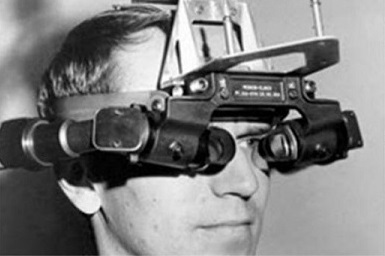

Virtual Reality is a computer-generated simulation of a 3D environment, which seems very real to the person experiencing it using special electronic equipment. The objective is to achieve a strong sense of being present in the virtual environment. Today's consumer tech VR involves wearing a head-mounted display, such as goggles, to view stereoscopic 3D scenes. You can look around by moving your head and walk around by using hand controls or motion sensors. You are engaged in a fully immersive experience; it's as if you're really there in some other virtual world.

The Sword of Damocles(the headset on the left) is widely considered to be the first VR head-mounted display system. It was created in 1968 by computer scientist Ivan Sutherland with the help of his pupil Bob Sproull. He was already well known for his achievements in the area of computer graphics. One of these accomplishments is Sketchpad. At MIT's Lincoln Laboratory, Sutherland and his colleagues practiced the world's first head-mounted display experiments. By our time's standards, the features of this headset is very primitive, from its user interface to the realism and graphics of the siumlated world.

While VR technology can be used for games, it can also be used to simulate various kinds of environments, especially specific and hazardous situations. The image on the left shows a virtual reality simulation of the interior of a rocket ship. In this specific simulation, the person is tasked to put out a fire with the use of a fire extinguisher. Virtual reality not only has purpose in recreational entertainment but can be used to simulate unsuitable and dangerous environments that we can use to gain important experience from.
Associated threats with virtual reality are existent. Depending on the simulation, the immersive nature of virtual reality can induce stress or anxiety. For example, a simulation of the Vietnam War can cause the viewer to be unsettled and stressed. It will take a while for the person to recover because they experience everything as if they were really in the conflict. People who use these headsets may complain about dizziness, motion sickness and nausea. Wearable technology like VR headsets may expose the user to harmful electromagnetic frequency radiations.